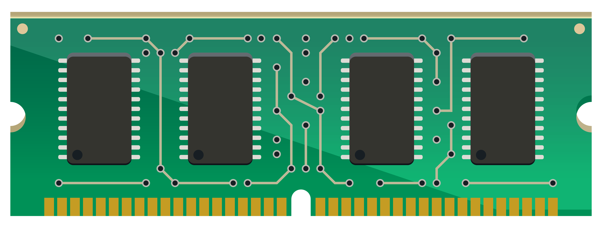

Random Access Memory is one of the vital parts of a computer. If you take out the RAM chip out of your computer, it won’t start. It is faster than the hard drives and is used to store program data which is currently used by the CPU. But RAM suffers from short-term memory loss. What does it mean? It holds data only when it receives power. Once you turn off your computer all the data will be lost. That’s the reason it can’t be used as a permanent storage solution in a computer. The RAM chips we use on our laptop and desktops differ in size. The reason is to make the memory chip compact for the laptops. But they have the same functionality and powers. Dynamic RAM integrated circuits, known as Dual-Inline Memory Module (DIMM), are mounted on green colored PCB and then called as DIMM chips. Memory variants like DDR, DDR2, DDR3, DDR4, etc. differ in the number of pin counts they have.
Before DIMMs, SIMMs used to exist. The key difference between the two is the number of pin counts. SIMMs have half the number of pins than DIMMs. However, the number of pins will appear the same if you take a casual look on them. A keen observation would lead to a conclusion that the pins on either side of a SIMM are connected to each other which is not the case with DIMM.
Also, the SIMM supports a 32-bit data bus while DIMM supports 64-bit data bus. This allows the flow of more data in the case of DIMM. The modern 64-bit CPUs would require an installation of two SIMMs chips.A single DIMM would be sufficient for that. Hence, the SIMMs became obsolete with time